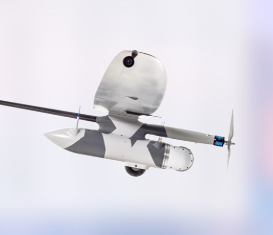
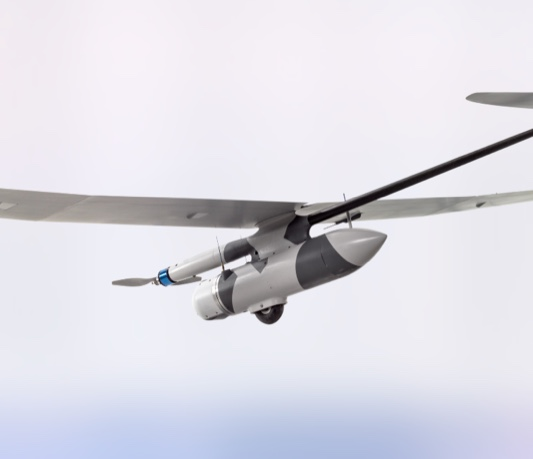
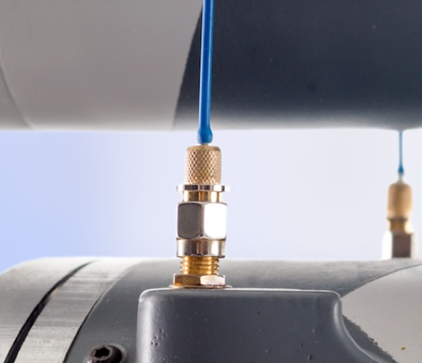
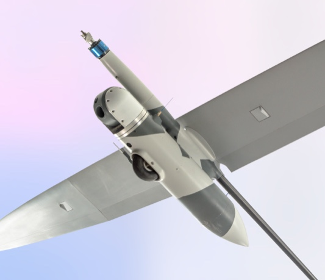
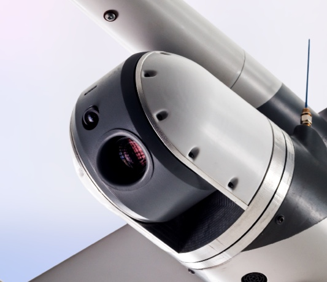
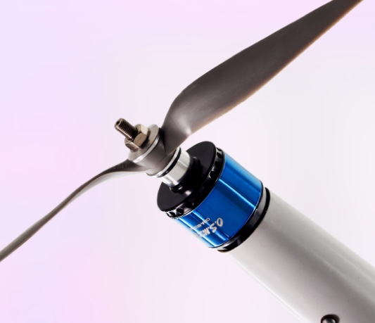

Беспилотный летательный апарат (БпЛА) созданный
для выполнения аэрофотосъемки местности
и воздушной разведки.
Конструкция
Овserver-S представляет собой летательный аппарат самолетного типа (моноплан) с двухлопастным винтом тянущего типа, относится к класссу тактических БпЛА.
Конструкция БпЛА выполнена с учетом различных условий эксплуатации, крыло большого удлинения имеет углепластиковый композитный лонжерон и позволяет эксплуатировать БпЛА в широком диапазоне скоростей. Благодоря модульной конструкции, при повреждении аппарата в условиях боевых действий, его ремонт произодится в короткое время путем замены вышедших из строя элементов.
Привод — бесколлекторный синхронный электродвигатель.
Питание электродвигателя и бортового оборудования осуществляется от литий-полимерных аккумуляторов большой емкости (16 А/Ч).
дальность полета
100
Километров
продолжительность
полета
140
минут
дальность
видеоканала
30
Километров
оптическое
увеличение
30
х
Аэродинамичность
Дальность полета:
Аэродинамическое качество 20;
Способен находится в воздухе до 3 часов;
До 30 км с учетом сохранения канала передачи данных и управления
До 100 км в автономном режиме (по заданному маршруту, с прекращением после 30 км канала управления с наземной станции).
Испытания
БпЛА Observer-S прошел испытания на Государственном научно-испытательном центре Вооруженных Сил Украины и получил заключение о соответствии уточненным требованиям к БпЛА класса - мини (тактического звена).
В рамках испытаний БпЛА Observer-S также подтвердил способность выполнять полетное задание в условиях применения комплекса радиопомех (подавления сигналов GSM, GPS, ГЛОНАСС).
Транспортировка
БПАК имеет высокую степень мобильности - весь комплект может поместиться в салоне легкового автомобиля-внедорожника. В условиях экстремальных ситуаций и рельефа (горная и лесистая местность) комплекс транспортируется группой из четырех человек.
Низкие массогабаритные показатели в сочетании с высокими летно-техническими характеристиками являются явным преимуществом БПАК. В сложенном для транспортировки виде комплекс имеет три контейнера (2 транспортных ящикa 1700Х400Х500 мм, 1 кейс наземной станции управления (1200Х250Х500). Общий объем комплекса в состоянии для транспортировки не превышает 1 м3.
Характеристики
Технологии и автоматизация управления
Технические характеристики
Сфера применения БПЛА
Комплектация
Часто задаваемые вопросы
– Не требует специальных навыков – автоматизация взлета, посадки;
– Способен выполнять автоматический полет по заданному маршруту с возможностью его
корректировки в режиме реального времени, в течениии всего полета БпЛА передает
информацию о ходе выполнения полета, свое местоположение с привязкой на карте,
воздушную и путевую скорости, курс полета, высоту;
– Автоматическое сопровождение неподвижной цели;
– Для удобства разведки точечной цели БпЛА имеет режим облета указанной точки с заданным
радиусом, автоматически осуществляя коррекционные поправки учитывая угловые скорости
полета возникающие при воздействии атмосферных погодных явлений;
– В автоматическом режиме рассчитывает координаты наблюдаемой цели и передает их на
наземную станцию управления;
– Может работать в связке с другими беспилотниками и комплексами;
– Может сам являться ретранслятором.
Взлет
С шасси на ровном участке поверхности (управление оператором), возможен запуск «с руки»; взлет и набор высоты происходит в автоматическом режиме.
посадка
Посадка
На шасси на ровном участке (автоматически).
продолжительность полета
продолжительность полета
90-140 мин. в зависимости от полезной нагрузки и комплектации.
дальность маршрута
дальность маршрута
75-100 км в зависимости от полезной нагрузки и комплектации.
Удаленность от базовой точки
25-30 км.
Дальность канала данных
25-30 км.
Канал данных
Цифровий канал несучої частоти 930-945 МГц, застосоване ППРЧ
видеоканал
Высокочастотный AV канал
дальность видеоканала
До 30 км. В зависимости от высоты выполнения полета, радио-частотной обстановки и высоты установки наземного антенного комплекса.
силовая установка
Бесколлекторный синхронный электродвигатель.
система управления
Комплексная система автоматического пилотирования с GPS приемником, двух- осевым гироскопом, трех- осевым акселерометром, датчиком воздушной скорости, датчиком воздушного давления. В режиме реального времени БпЛАObserver - S передает всю необходимую полетную информацию на наземную станцию управления, возможно изменение маршрута полета в режиме реального времени, поддерживается режим облета установленной точки по окружности с заданным радиусом, при потере связи БПЛА автоматически вернется на место старта.
полезная нагрузка
1 - 1,5 кг.
взлетный вес
5 – 5,8 кг
длина
1650 мм.
размах крыла
3400 мм.
Тяговооруженность
1
аэродинамическое качество
20
Военное предназначение
Аппарат применяется для воздушной разведки в условиях ведения боевых действий, обнаружения и определение координат боевой техники, расположения войск, укрепленных позиций противника для целеуказаний, корректировка огня артиллерии;
Промышленное применение
Патрулирование выделенных районов местности, обнаружения очагов стихийных бедствий и чрезвычайных проишествий, внешний контроль исправности протяженных путепроводов и выявление поврежденных участков (дорог, нефте-газопроводов, линий электропередач)
Беспилотный авиационный комплекс Овserver-S включает в себя:
Два беспилотных летательных аппарата Овserver-S, оборудованных цифровыми видекоамерами с 30-кратным оптическим зумом;
Наземную станцию управления;
Антенный комплекс:
• антенна для канала передачи телеметрических данных и управления самолетом
• антенна передачи данных для видеоканала;
Две аккумуляторные батареи для двух БПЛА;
Зарядное устройство для акуммуляторных батарей.
Вопрос:
В каких именно сферах можно использовать беспилотник?
Ответ:
Аппарат имеет многоцелевое назначение, применяется для воздушной разведки в условиях ведения боевых действий, а также корректировки огня артиллерии. В то же время предполагается промышленное применение БпЛА - обнаружение очагов стихийных бедствий и чрезвычайных проишествий, воздушного патрулирования протяженных путепроводов и выявление поврежденных участков (дорог, нефте-газопроводов, линий электропередач);
Вопрос:
Какая цена полного комплекта?
Ответ:
Цена напрямую зависит от доукомплектования аппарата. У вас есть возможность кастомизировать ваш аппарат до нужной необходимости.
Вопрос:
Насколько автоматизирована система управления БпЛА?
Ответ:
Аппарат Овserver-S способен выполнять автоматический полет по заданному маршруту с возможностью его корректировки в режиме реального времени, в течениe всего полета БпЛА передает информацию о ходе выполнения полета, свое местоположение с привязкой на карте, воздушную и путевую скорости, курс полета, высоту;






Navigate with arrow keys
О компании
Def C – профильная компания консорциума Intecracy Group, которая занимается реализацией проектов в оборонном секторе и для военно- промышленного комплекса.
Мы не появились из ниоткуда. На протяжении долгих лет мы создавали проекты и решения в сфере высоких, а также информационных технологий. Для структуризации рабочих направлений был создан консорциум под названием Intecracy.
Intecracy Group это:
— более 20 лет опыта разработки ПО и решений в сфере ИТ, а также
собственных продутов;
— 150 проектов и решений в госсекторе Украины;
— 9 компаний входит в состав Intecracy Group;
— филиалы в странах ЕС, а также в Америке;
— сертифицированные работники.
О нас знают
Профильная компания консорциума Intecracy Group, которая занимается реализацией проектов в оборонном секторе и для военно- промышленного комплекса.
Мы не появились из ниоткуда. На протяжении долгих лет мы создавали проекты и решения в сфере высоких, а также информационных технологий. Для структуризации рабочих направлений был создан консорциум под названием.